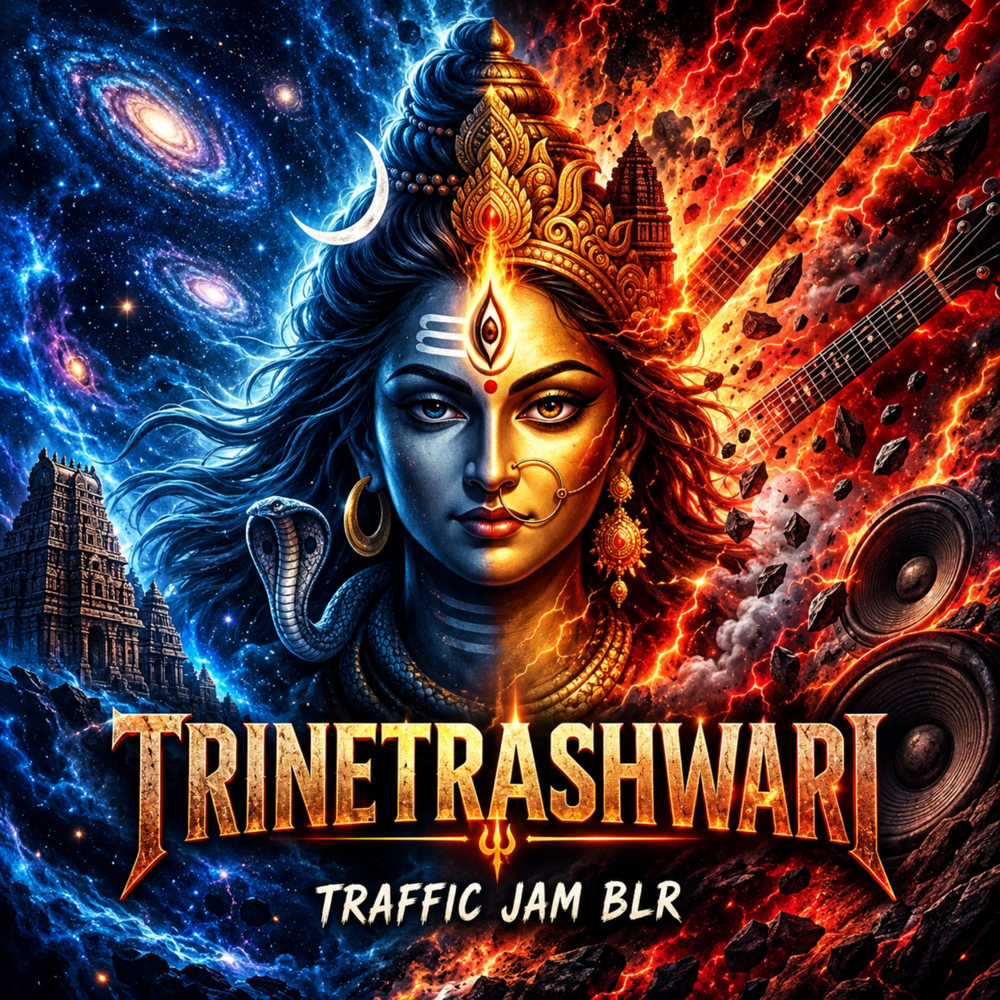

TWO ENERGIES. ONE SOUND.
TRINETRASHWARI
TRAFFIC JAM
An Ode to Shiva & Shakti
Where Indian Classical Meets Progressive Rock.
An immersive musical journey celebrating the divine union of Shiva and Shakti. Indian classical vocals, soulful chants, powerful guitar riffs, driving drums, melodic bass, and intricate tabla rhythms come together in a progressive fusion of devotion and rock.
Listen now
CHOOSE YOUR PLATFORMTHE OFFICIAL MUSIC VIDEO
Experience Trinetrashwari
A meeting of worlds. Best experienced with headphones.
THE ESSENCE
The Sound of
Shiva & Shakti
Rooted in devotion, driven by rock. Trinetrashwari brings together the depth of Indian classical music and the intensity of progressive rock, creating a powerful musical interpretation of Shiva and Shakti.
INDIAN CLASSICALPROGRESSIVE ROCK
THE COLLECTIVE
The People Behind the Music
Performed by
- Vocals
- Harshal | Himanshu
- Keyboard
- Chinmay
- Lead Guitar
- Ayush
- Bass Guitar
- Hari
- Drums
- Dhruv
- Tabla
- Rohit
Composition
- Ayush Thakur
- Chinmay Joshi
- Himanshu Mahar
- Harshal Pandey
Lyrics
- Harshal Pandey
- Himanshu Mahar
Backing vocals
Shreya | Ayush | Chinmay
Mixing / Mastering / Production
Cymasonic Labs